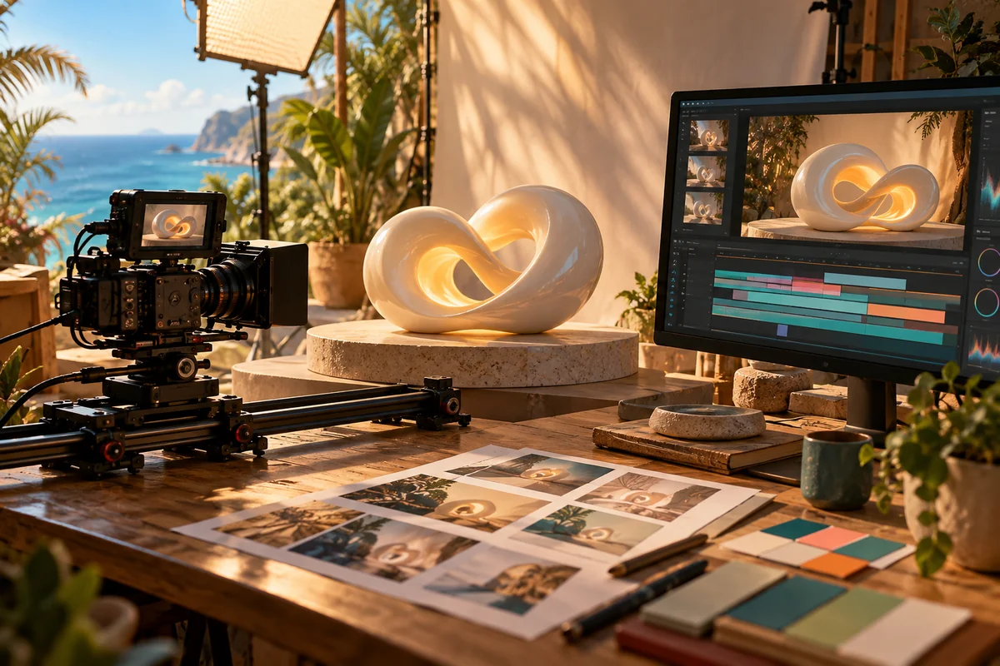

Keep it tactile.
Use footage, performance, photographs and original art you already have. Add a clear title or caption where it helps.
Costs to consider: editing time, storage, permissions and any transcription service.

A practical production map
Choose the simplest route that supports your intention, then add complexity where it earns its place. The connections below are a design to complete and test.
Original generated concept artwork. Explore a possible direction.
Let the purpose shape the edit
Music, teaching and shorts can share tools while needing different timing and review questions.
Use its actual phrases, arrangement and lyric meaning to decide where the picture changes.
More than one visual answer
A full 3D world offers freedom, and a simpler approach can leave more time for story and revision.
Use footage, performance, photographs and original art you already have. Add a clear title or caption where it helps.
Costs to consider: editing time, storage, permissions and any transcription service.
Combine flat character art, moving cameras, typography and a few reusable objects. A council can begin with portraits and named turns.
Costs to consider: preparation, compositing and optional image generation.
Build a scene in Blender with repeatable lights and camera positions. Develop character rigs if a performance needs them.
Costs to consider: modelling, rendering, hardware or rented compute and iteration.
Handoffs with a clear purpose
Keep the editable sources, timing decisions and review notes connected to the same production.
Save the options, assumptions, dissent and the direction you approve. A generated verdict is a proposal to consider.
Link the project brief, source assets, timing map and output formats. Local rendering and editing tasks may need new adapters alongside existing generation jobs.
Use the combined editing kit to prepare captions, diagrams or motion. Retimed transcripts help the words follow edited footage. Selected cards still need visual review.
Keep the scene file and render settings. Test a short image sequence or clip in Resolve before committing to a long render.
Assemble the actual media, refine colour and sound, check the result and save the editable project with the export.
Start with an observable exchange
A rendered scene is a useful first bridge between tools. If editable cuts matter, test OpenTimelineIO with a small timeline. It may preserve media and timing without translating every effect.
Resolve's HTML title system, OGraf, is another possible experiment for selected graphics. A wrapper would need to meet its playback and seeking requirements; Herk cards are not drop-in titles.
Explore the handoff testsTry one owned song excerpt, one original graphic and one small scene. Export a widescreen edit, then deliberately reframe a vertical version.
Which handoff worked well, which needed help, and what could become a reusable skill?